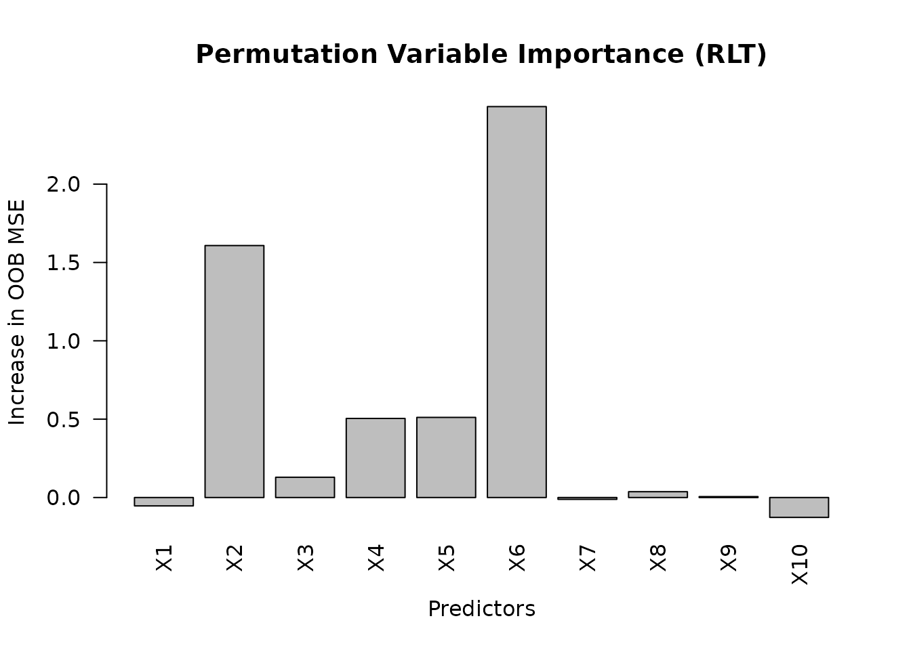
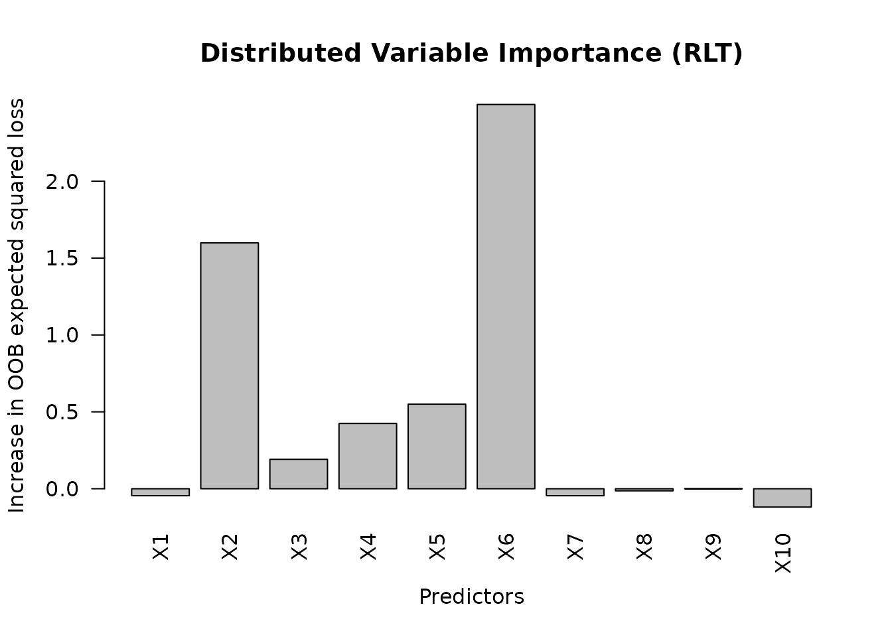

Variable Importance (Permutation and Distributed) - Tutorial (RLT)
Ruoqing Zhu
Last Updated: October 26, 2026
Source:vignettes/articles/variable-importance.Rmd
variable-importance.RmdOverview
Variable importance (VI) measures how much a fitted forest relies on each predictor for prediction. This page illustrates permutation and distributed importance using out-of-bag (OOB) observations, which were excluded from fitting the tree in which they are evaluated.
Data
We generate continuous and categorical predictors with a continuous outcome.
set.seed(1)
# ---- Generate a small synthetic dataset ----
n <- 80
p <- 10
# Continuous + categorical predictors (last half as factors)
X1 <- matrix(rnorm(n * (p/2)), n, p/2)
X2 <- matrix(as.integer(runif(n * (p/2)) * 3), n, p/2) # integers 0,1,2
# Continuous outcome with a simple signal + noise
X_numeric <- data.frame(X1, X2)
colnames(X_numeric) <- paste0("X", seq_len(p))
y <- 1 + rowSums(X_numeric[, 2:6]) +
2 * (X_numeric[, p/2 + 1] %in% c(1, 2)) + rnorm(n)
X <- X_numeric
X[, (p/2 + 1):p] <- lapply(X[, (p/2 + 1):p], as.factor)
trainX <- X
trainY <- yOption A - Permutation Importance
Set importance = "permute" to measure the increase in
OOB mean squared error after permuting a predictor. Extract the results
with importance().
library(RLT)
# Common fitting and resampling settings for both illustrations
ntrees <- 200
ncores <- 1
nmin <- 5
mtry <- p/2
samplereplace <- TRUE
sampleprob <- 0.80
nsplit <- 0
fit_perm <- RLT(
trainX, trainY, model = "regression",
ntrees = ntrees, mtry = mtry, nmin = nmin,
resample.prob = sampleprob,
resample.replace = samplereplace,
nsplit = nsplit,
importance = "permute", # permutation-based VI
seed = 1, ncores = ncores, verbose = FALSE
)
vi_perm <- importance(fit_perm)
vi_perm
## Variable VI
## --------------------------
## X1 -0.0535
## X2 1.6080
## X3 0.1293
## X4 0.5047
## X5 0.5113
## X6 2.4947
## X7 -0.0116
## X8 0.0371
## X9 0.0057
## X10 -0.1269Here nsplit = 0 searches all available cutpoints. Each
tree draws 80% of the sample size with replacement, so some observations
can be drawn more than once. OOB importance does not require retaining
the resampling records with resample.track = TRUE.
# Simple visualization
barplot(
vi_perm$VI,
main = "Permutation Variable Importance (RLT)",
names.arg = vi_perm$Variable,
ylab = "Increase in OOB MSE",
xlab = "Predictors",
las = 2
)
The simulated response depends on X2 through X6. In this fit, X6 has the largest permutation importance. Values near zero or slightly below zero indicate little measured loss from permutation in this small sample; they do not prove that a variable has no effect.
knitr::kable(
data.frame(Predictor = vi_perm$Variable, Importance = vi_perm$VI),
digits = 3, row.names = FALSE,
caption = "Permutation importance values used in the bar chart."
)| Predictor | Importance |
|---|---|
| X1 | -0.053 |
| X2 | 1.608 |
| X3 | 0.129 |
| X4 | 0.505 |
| X5 | 0.511 |
| X6 | 2.495 |
| X7 | -0.012 |
| X8 | 0.037 |
| X9 | 0.006 |
| X10 | -0.127 |
Option B - Distributed Importance
Set importance = "distribute" to route OOB observations
to both children at splits involving the assessed predictor, with
probabilities proportional to the child node weights. For regression,
the method averages squared losses over the resulting terminal-node
routes, then compares this expected loss with the ordinary OOB loss. It
does not first average the terminal-node predictions and then compute a
squared loss.
The next fit uses the same data and fitting and resampling settings, changing only the importance method. Both methods need OOB observations; sampling almost all observations without replacement can leave too few for importance calculation.
fit_dist <- RLT(
trainX, trainY, model = "regression",
ntrees = ntrees, mtry = mtry, nmin = nmin,
nsplit = nsplit,
resample.prob = sampleprob,
resample.replace = samplereplace,
importance = "distribute",
seed = 1, ncores = ncores, verbose = FALSE
)
vi_dist <- importance(fit_dist)
vi_dist
## Variable VI
## --------------------------
## X1 -0.0453
## X2 1.5990
## X3 0.1913
## X4 0.4246
## X5 0.5500
## X6 2.4991
## X7 -0.0454
## X8 -0.0137
## X9 -0.0004
## X10 -0.1190
barplot(
vi_dist$VI,
main = "Distributed Variable Importance (RLT)",
names.arg = vi_dist$Variable,
ylab = "Increase in OOB expected squared loss",
xlab = "Predictors",
las = 2
)
The largest distributed importance in this fit belongs to X6. Both methods describe predictive reliance, but they perturb predictor use differently. Their rankings illustrate these two fits; common settings do not make the measures equivalent or establish a performance comparison. Near-zero or negative distributed importance likewise indicates little measured increase in loss, rather than proof that a predictor has no effect.
knitr::kable(
data.frame(Predictor = vi_dist$Variable, Importance = vi_dist$VI),
digits = 3, row.names = FALSE,
caption = "Distributed importance values used in the bar chart."
)| Predictor | Importance |
|---|---|
| X1 | -0.045 |
| X2 | 1.599 |
| X3 | 0.191 |
| X4 | 0.425 |
| X5 | 0.550 |
| X6 | 2.499 |
| X7 | -0.045 |
| X8 | -0.014 |
| X9 | 0.000 |
| X10 | -0.119 |